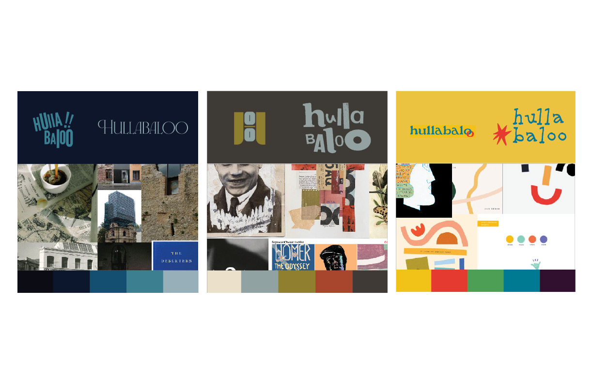
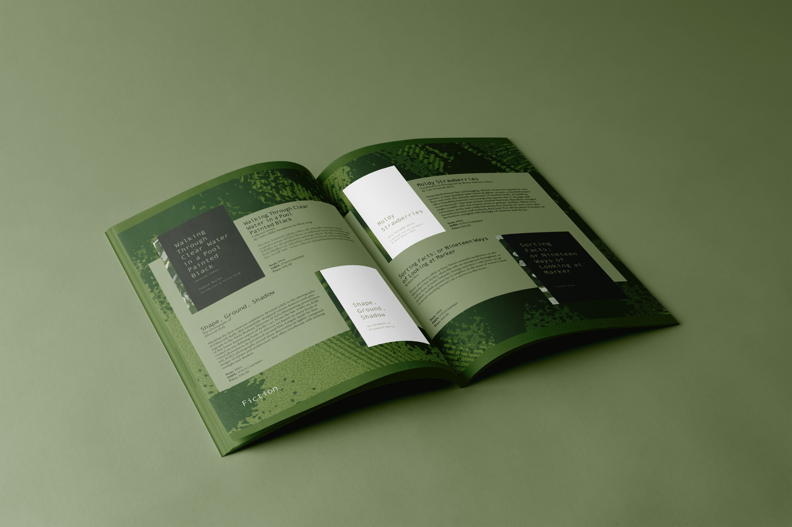

The client had many ideas when it came to the visual identity of this company. Our first challenge was narrowing down and simplifying these themes and values into cohesive brand stories.
The through lines for the brand were to steer away from corporate style design and to place importance on community, culture, and literature.

We presented these 3 directions based on information we gathered during our first meeting. Each approach geared towards different core values conveyed to us: History and cultural identity, collage and discovery, and playfulness.
The client was drawn to how broad the theme of play was, not wanting a strict brand narrative. Combined with visual aspects from the other directions, we constructed our final product.
The logo came from the first brand narrative we presented, being inspired by the history of typography. It emulates sound poetry, a genre that naturally has room to be playful.
By including alternate logomarks, the brand becomes flexible, molding to any context the client happens to put it in.
The monochromatic color palette provides a way to keep the brand cohesive for when/ ifever other design elements become more wild and experimental.
An example of is this the abstract patterns we developed for book spines to separate genre. These were inspired by random patterns found in books in the public domain,
that now are connected by the brand's color palette.

Once all of the visual elements were pinned down, we were able to focus on important deliverables the client wanted to see, such as book covers and a seasonal catalogue spread.
In the end, we created a flexible brand that can easily evolve and change. It stands out from corporate design by having a plethora moving pieces for the client to mix-match and use at will, while still
being recognizable as Hullabaloo.